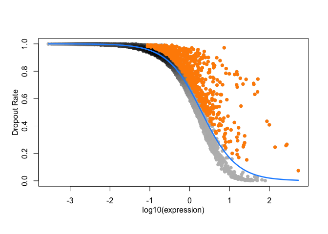

Overview
scLearn is a learning-based framework designed to automatically infer quantitative measurements and similarity thresholds for single-cell assignment tasks. It achieves well-generalized performance across different single-cell types and is particularly robust in identifying novel cell types not present in reference datasets. scLearn introduces a multi-label single-cell assignment strategy for the first time, allowing simultaneous assignment of cell type and developmental stage, which is highly effective for cell development and lineage analysis.

The Overview of scLearn
☀️ Key Features
Robustness and Generalization: scLearn is designed to be robust across various single-cell assignment tasks, providing consistent performance regardless of the cell type or dataset used.
Efficiency in Novel Cell Type Identification: scLearn efficiently identifies novel cell types that are absent in the reference datasets, overcoming limitations of traditional methods that rely on predefined similarity thresholds.
Multi-Label Assignment: scLearn proposes a multi-label assignment strategy, allowing simultaneous assignment of cell type and developmental stage. This dual assignment is particularly useful for understanding cell lineage and development.
Pre-trained Models: scLearn comes with pre-trained models and comprehensive reference datasets for human and mammalian single cells, facilitating broad applications in single-cell assignment.
⏬ Installation
Release Version
BiocManager::install("scLearn")🚀 Quick Start
Single-label single cell assignment
Data preparation
Reference Cell Database: baron-humanQuery Cell Data: Muraro-human
data(RefCellData)
RefCellData## class: SingleCellExperiment
## dim: 20125 1033
## metadata(0):
## assays(2): counts logcounts
## rownames(20125): A1BG A1CF ... ZZZ3 pk
## rowData names(10): feature_symbol is_feature_control ... total_counts
## log10_total_counts
## colnames(1033): human3_lib2.final_cell_0129 human3_lib2.final_cell_0359
## ... human3_lib3.final_cell_0896 human4_lib1.final_cell_0568
## colData names(30): human cell_type1 ... pct_counts_ERCC is_cell_control
## reducedDimNames(0):
## mainExpName: NULL
## altExpNames(0):
data(QueryCellData)
QueryCellData## class: SingleCellExperiment
## dim: 19127 1005
## metadata(0):
## assays(2): normcounts logcounts
## rownames(19127): A1BG-AS1__chr19 A1BG__chr19 ... ZZEF1__chr17
## ZZZ3__chr1
## rowData names(1): feature_symbol
## colnames(1005): D31.6_62 D30.4_62 ... D30.4_58 D31.7_42
## colData names(3): cell_type1 donor batch
## reducedDimNames(0):
## mainExpName: NULL
## altExpNames(0):cell quality control
RefRawcounts <- assays(RefCellData)[[1]]
RefAnn <- as.character(RefCellData$cell_type1)
names(RefAnn) <- colnames(RefCellData)
RefDataQC <- Cell_qc(
expression_profile = RefRawcounts,
sample_information_cellType = RefAnn,
sample_information_timePoint = NULL,
species = "Hs",
gene_low = 500,
gene_high = 10000,
mito_high = 0.1,
umi_low = 1500,
umi_high = Inf,
logNormalize = TRUE,
plot = FALSE,
plot_path = "./quality_control.pdf")rare cell type filtered
RefDataQC_filtered <- Cell_type_filter(
expression_profile = RefDataQC$expression_profile,
sample_information_cellType = RefDataQC$sample_information_cellType,
sample_information_timePoint = NULL,
min_cell_number = 10)feature selection
RefDataQC_HVG_names <- Feature_selection_M3Drop(
expression_profile = RefDataQC_filtered$expression_profile,
log_normalized = TRUE,
threshold = 0.05)

feature selection
Model learning
Training the model. To improve the accuracy for “unassigned” cell, you can increase “bootstrap_times”, but it will takes longer time. The default value of “bootstrap_times” is 10.
scLearn_model_learning_result <- scLearn_model_learning(
high_varGene_names = RefDataQC_HVG_names,
expression_profile = RefDataQC_filtered$expression_profile,
sample_information_cellType = RefDataQC_filtered$sample_information_cellType,
sample_information_timePoint = NULL,
bootstrap_times = 1,
cutoff = 0.01,
dim_para = 0.999
)Results：scLearn_model_learning_resultis the final result file containing the processed reference cell matrix.
high_varGene_names: The set of highly variable genes (693 HVGs)simi_threshold_learned: The similarity results between cell typestrans_matrix_learned: The transformed matrix (23 features * 693 HVGs)feature_matrix_learned: After DCA, the matrix of cell type features (these features are obtained by dimensionality reduction of the highly variable gene set) (12 celltype * 23 features)
Cell assignment
Assignment with trained model above. To get a less strict result for “unassigned” cells, you can decrease “diff” and “vote_rate”. If you are sure that the cell type of query cells must be in the reference dataset, you can set “threshold_use” as FALSE. It means you don’t want to use the thresholds learned by scLearn.
QueryRawcounts <- assays(QueryCellData)[[1]]
QueryDataQC <- Cell_qc(
expression_profile = QueryRawcounts,
species = "Hs",
gene_low = 50,
umi_low = 50)
rownames(QueryDataQC$expression_profile) <- gsub("__\\w+\\d+", "", rownames(QueryDataQC$expression_profile))
scLearn_predict_result <- scLearn_cell_assignment(
scLearn_model_learning_result = scLearn_model_learning_result,
expression_profile_query = QueryDataQC$expression_profile,
diff = 0.05,
threshold_use = TRUE,
vote_rate = 0.6)## [1] "The number of missing features in the query data is 36 "
## [1] "The rate of missing features in the query data is 0.051948051948052 "
head(scLearn_predict_result)## Query_cell_id Predict_cell_type Additional_information
## D31.6_62 D31.6_62 acinar 0.910551385257761
## D30.4_62 D30.4_62 ductal 0.797792782512641
## D28.4_85 D28.4_85 acinar 0.898705438318699
## D28.2_87 D28.2_87 acinar 0.855877643727897
## D30.5_79 D30.5_79 ductal 0.846464074908766
## D28.2_42 D28.2_42 acinar 0.908734384816745Results: The output consists of three columns of information. The Query_cell_id represents the cell ID, Predict_cell_type indicates the predicted cell type, and Additional_information provides the similarity results.
- Cells with a
Predict_cell_typeof unassigned are those that do not intersect with the reference cell set.
Accuracy
QueryData_trueLabel <- as.character(QueryCellData$cell_type1)
names(QueryData_trueLabel) <- colnames(QueryCellData)
QueryData_CellType <- QueryData_trueLabel |>
as.data.frame() |>
tibble::rownames_to_column("CellID") |>
dplyr::rename(trueLabel = QueryData_trueLabel) |>
dplyr::inner_join(scLearn_predict_result |>
as.data.frame() |>
dplyr::rename(predLabel = Predict_cell_type),
by = c("CellID" = "Query_cell_id")) |>
dplyr::select(CellID, trueLabel, predLabel, everything())
print(
paste("Final Accuracy =",
sprintf("%1.2f%%",
100 * sum(QueryData_CellType$predLabel == QueryData_CellType$trueLabel) / nrow(QueryData_CellType))))Multi-label single cell assignment
Data preprocessing
Model learning
Cell assignment: We just use
ESC.rdsitself to test the multi-label single cell assignment here.
Download ESC.rds
# loading the reference dataset
RefData_MLab <- readRDS("ESC.rds")
RefRawcounts_MLab <- assays(RefData_MLab)[[1]]
RefAnn_MLab <- as.character(RefData_MLab$cell_type1)
names(RefAnn_MLab) <- colnames(RefData_MLab)
RefAnn2_MLab <- as.character(RefData_MLab$cell_type2)
names(RefAnn2_MLab) <- colnames(RefData_MLab)
# cell quality control and rare cell type filtered and feature selection
RefDataQC_MLab <- Cell_qc(
expression_profile = RefRawcounts_MLab,
sample_information_cellType = RefAnn_MLab,
sample_information_timePoint = RefAnn2_MLab,
species = "Hs",
gene_low = 500,
gene_high = 10000,
mito_high = 0.1,
umi_low = 1500,
umi_high = Inf,
logNormalize = TRUE,
plot = FALSE,
plot_path = "./quality_control.pdf")
RefDataQC_filtered_MLab <- Cell_type_filter(
expression_profile = RefDataQC_MLab$expression_profile,
sample_information_cellType = RefDataQC_MLab$sample_information_cellType,
sample_information_timePoint = RefDataQC_MLab$sample_information_timePoint,
min_cell_number = 10)
RefDataQC_HVG_names_MLab <- Feature_selection_M3Drop(
expression_profile = RefDataQC_filtered_MLab$expression_profile,
log_normalized = TRUE,
threshold = 0.05)
# training the model
scLearn_model_learning_result <- scLearn_model_learning(
high_varGene_names = RefDataQC_HVG_names_MLab,
expression_profile = RefDataQC_filtered_MLab$expression_profile,
sample_information_cellType = RefDataQC_filtered_MLab$sample_information_cellType,
sample_information_timePoint = RefDataQC_filtered_MLab$sample_information_timePoint,
bootstrap_times = 10,
cutoff = 0.01,
dim_para = 0.999)
# loading the quary cell and performing cell quality control
QueryData_MLab <- readRDS("ESC.rds")
QueryRawcounts_MLab <- assays(QueryData_MLab)[[1]]
### the true labels of this test dataset
# query_ann1 <- as.character(data2$cell_type1)
# names(query_ann1) <- colnames(data2)
# query_ann2 <- as.character(data2$cell_type2)
# names(query_ann2) <- colnames(data2)
# rawcounts2 <- rawcounts2[, names(query_ann1)]
# data_qc_query <- Cell_qc(rawcounts2, query_ann1, query_ann2, species = "Hs")
QueryDataQC_MLab <- Cell_qc(
expression_profile = QueryRawcounts_MLab,
species = "Hs",
gene_low = 50,
umi_low = 50)
# Assignment with trained model above
scLearn_predict_result_MLab <- scLearn_cell_assignment(
scLearn_model_learning_result = scLearn_model_learning_result,
expression_profile_query = QueryDataQC_MLab$expression_profile)
head(scLearn_predict_result_MLab)Pre-trained Models
scLearn provides pre-trained models for 30 datasets and 20 mouse organs datasets, covering a wide range of commonly used cell types and tissues. These models can be directly used for single-cell categorization tasks.
-
The information of pre-trained scLearn models of the 30 datasets
Pre-trained model names Description No. of cell types Corresponding dataset(Journal, date) pancreas_mouse_baron.rds Mouse pancreas 9 Baron_mouse(Cell System, 2016) pancreas_human_baron.rds Human pancreas 13 Baron_human(Cell System, 2016) pancreas_human_muraro.rds Human pancreas 8 Muraro(Cell System, 2016) pancreas_human_segerstolpe.rds Human pancreas 8 Segerstolpe(Cell Metabolism, 2016) pancreas_human_xin.rds Human pancreas 4 Xin(Cell Metabolism, 2016) embryo_development_mouse_deng.rds Mouse embryo development 4 Deng(Science, 2014) cerebral_cortex_human_pollen.rds Human cerebral cortex 9 Pollen(Nature biotechnology, 2014) colorectal_tumor_human_li.rds Human colorectal tumors 5 Li(Nature genetics, 2017) brain_mouse_usoskin.rds Mouse brain 4 Usoskin(Nature neuroscience,2015) cortex_mouse_tasic.rds Mouse cortex 17 Tasic(Nature neuroscience, 2016) embryo_stem_cells_mouse_klein.rds Mouse embryo stem cells 4 Klein(Cell, 2015) brain_mouse_zeisel.rds Mouse brain 9 Zeisel(Science, 2015) retina_mouse_shekhar_coarse-grained_annotation.rds Mouse retina 4 Shekhar(Cell, 2016) retina_mouse_shekhar_fine-grained_annotation.rds Mouse retina 17 Shekhar(Cell, 2016) retina_mouse_macosko.rds Mouse retina 12 Macosko(Cell, 2015) lung_cancer_cell_lines_human_cellbench10X.rds Mixture of five human lung cancer cell lines 5 CellBench_10X(Nature methods, 2019) lung_cancer_cell_lines_human_cellbenchCelSeq.rds Mixture of five human lung cancer cell lines 5 CellBench_CelSeq2(Nature methods, 2019) whole_mus_musculus_mouse_TM.rds Whole Mus musculus 55 TM(Nature, 2018) primary_visual_cortex_mouse_AMB_coarse-grained_annotation_3.rds Primary mouse visual cortex 3 AMB(Nature, 2018) primary_visual_cortex_mouse_AMB_fine-grained_annotation_14.rds Primary mouse visual cortex 14 AMB(Nature, 2018) primary_visual_cortex_mouse_AMB_fine-grained_annotation_68.rds Primary mouse visual cortex 68 AMB(Nature, 2018) PBMC_human_zheng_sorted.rds FACS-sorted PBMC 10 Zheng sorted(Nature communications ,2017) PBMC_human_zheng_68K.rds PBMC 11 Zheng 68k(Nature communications, 2017) primary_visual_cortex_mouse_VISP_coarse-grained_annotation.rds Mouse primary visual cortex 3 VISp(Nature, 2018) primary_visual_cortex_mouse_VISP_fine-grained_annotation.rds Mouse primary visual cortex 33 VISp(Nature, 2018) anterior_lateral_motor_area_mouse_ALM_coarse-grained_annotation.rds Mouse anterior lateral motor area 3 ALM(Nature, 2018) anterior_lateral_motor_area_mouse_ALM_fine-grained_annotation.rds Mouse anterior lateral motor area 32 ALM(Nature, 2018) middle_temporal_gyrus_human_MTG_coarse-grained_annotation.rds Human middle temporal gyrus 3 MTG(Nature, 2019) middle_temporal_gyrus_human_MTG_fine-grained_annotation.rds Human middle temporal gyrus 34 MTG(Nature, 2019) PBMC_human_a10Xv2.rds Human PBMC 9 PbmcBench_a10Xv2(bioRxiv, 2019) PBMC_human_a10Xv3.rds Human PBMC 8 PbmcBench a10Xv3(bioRxiv, 2019) PBMC_human_CL.rds Human PBMC 7 PbmcBench_CL(bioRxiv, 2019) PBMC_human_DR.rds Human PBMC 9 PbmcBench_DR(bioRxiv, 2019) PBMC_human_iD.rds Human PBMC 7 PbmcBench_iD(bioRxiv, 2019) PBMC_human_SM2.rds Human PBMC 6 PbmcBench_SM2(bioRxiv, 2019) PBMC_human_SW.rds Human PBMC 7 PbmcBench_SW(bioRxiv, 2019) -
The information of pre-trained scLearn models for the 20 mouse organs datasets
Trained model names Description No. of cell types Aorta_mouse_FACS.rds Mouse aorta 4 Bladder_mouse_FACS.rds Mouse bladder 2 Brain_Myeloid_mouse_FACS.rds Mouse brain myeloid 2 Brain_Non-Myeloid_mouse_FACS.rds Mouse brain non-myeloid 7 Diaphragm_mouse_FACS.rds Mouse diaphragm 5 Fat_mouse_FACS.rds Mouse fat 6 Heart_mouse_FACS.rds Mouse heart 10 Kidney_mouse_FACS.rds Mouse kidney 5 Large_Intestine_mouse_FACS.rds Mouse large intestine 5 Limb_Muscle_mouse_FACS.rds Mouse limb muscle 8 Liver_mouse_FACS.rds Mouse liver 5 Lung_mouse_FACS.rds Mouse lung 11 Mammary_Gland_mouse_FACS.rds Mouse mammary gland 4 Marrow_mouse_FACS.rds Mouse marrow 21 Pancreas_mouse_FACS.rds Mouse pancreas 9 Skin_mouse_FACS.rds Mouse skin 5 Spleen_mouse_FACS.rds Mouse spleen 3 Thymus_mouse_FACS.rds Mouse thymus 3 Tongue_mouse_FACS.rds Mouse tongue 2 Trachea_mouse_FACS.rds Mouse trachea 4
📖 Vignette
Using the following command and Choosing the html for more details.
utils::browseVignettes(package = "scLearn")💖 Contributing
Welcome any contributions or comments, and you can file them here.
✴️ Citation
B. Duan, C. Zhu, G. Chuai, C. Tang, X. Chen, S. Chen, S. Fu, G. Li, Q. Liu, Learning for single-cell assignment. Sci. Adv. 6, eabd0855 (2020).
For further inquiries or support, please contact bioinfo_db@163.com (binduan@sjtu.edu.cn) or qiliu@tongji.edu.cn.